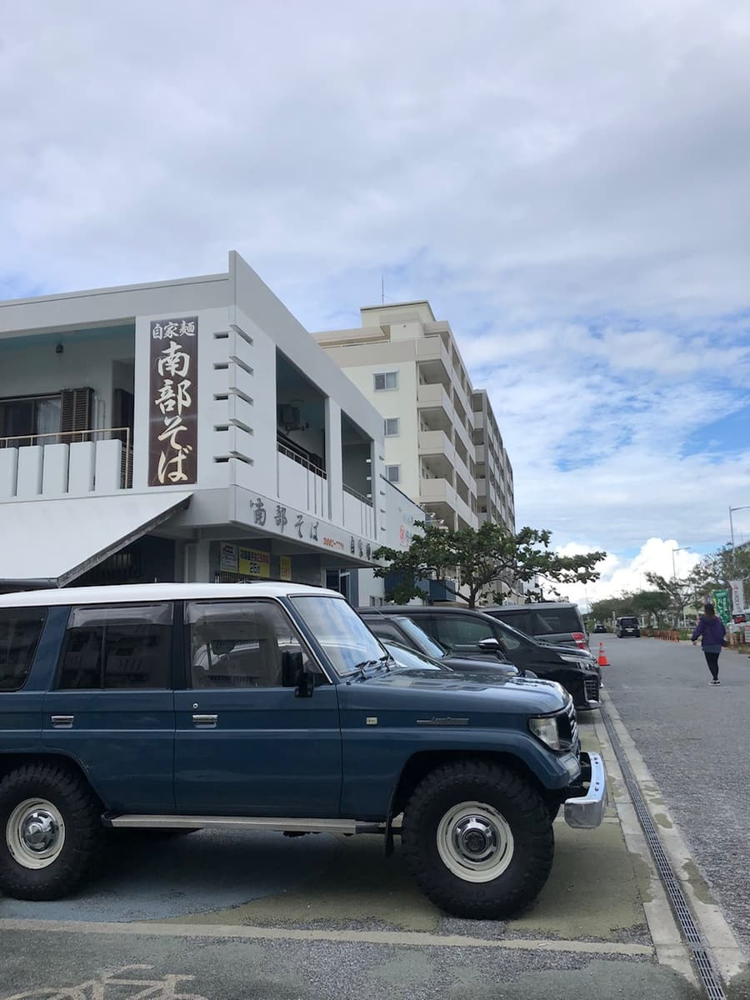
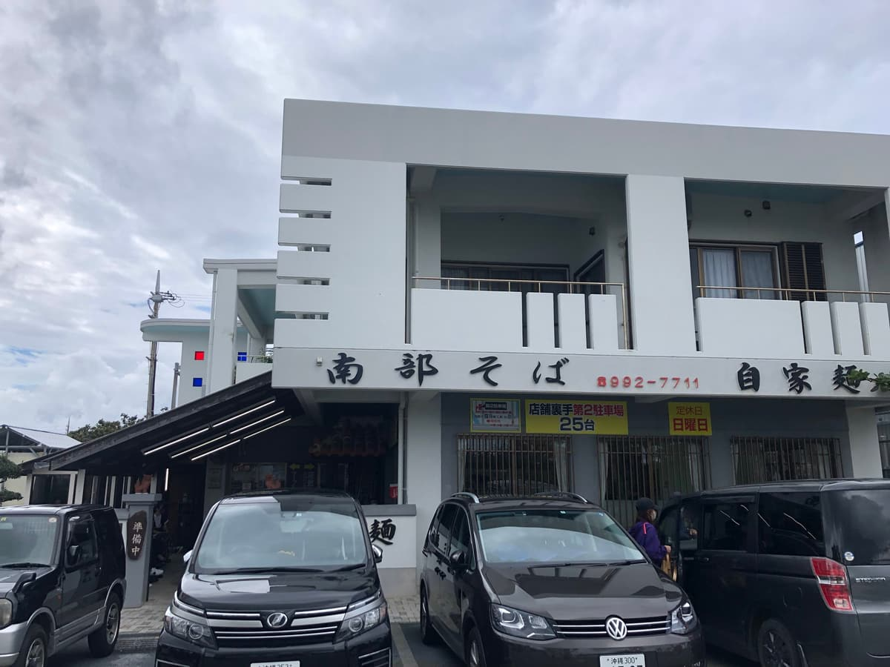
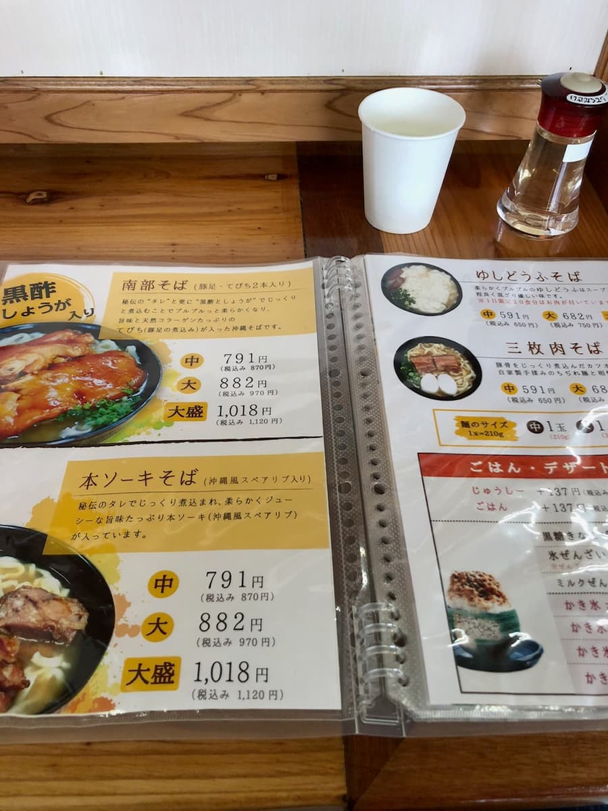
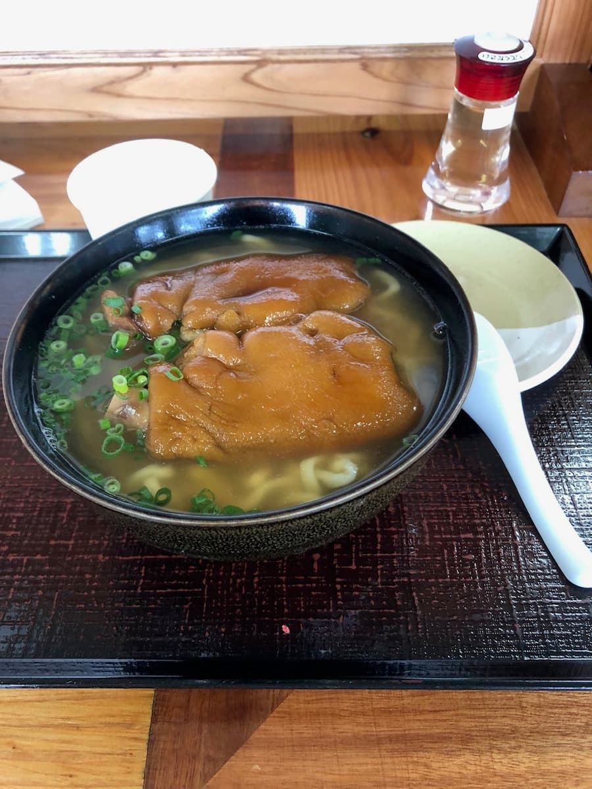

In November 2022, on my way back from surfing at Suicide Cliff Point in Itoman, I tried eating here lol It's along the National Route 331 bypass (Itoman Road), so it's easy to find.


I arrived right around the opening time of 11:00, but the parking lot in front of the shop already looked full. I thought it might be tough to eat here, but they also have a second? third? parking lot a little way off behind the shop, and after lining up for a bit, I made it inside safely ☺
When I went inside and looked at the menu, the "Nanbu Soba," which has the same name as the shop, caught my eye, so I ordered it.
Maybe pig's feet (tebichi) (stewed pig's trotters) are this shop's selling point as a topping, because two large pieces of pig's feet (tebichi) were sitting on top of the soba 😁 It was explained that the pig's feet (tebichi) are slowly stewed in a secret sauce with black vinegar and ginger until they're jiggly and soft, and packed with flavor and natural collagen. Looks delicious 🤤

This time I ordered the "Nanbu Soba (with two pieces of pig's feet/tebichi)," which shares the shop's name and seems to be its selling point. Some people from the mainland may not like pig's feet (tebichi), but there's also "bone-in pork ribs (hon-soki) (Okinawan-style spare ribs, the area around the pork rib bones)" and "yushi-dofu (soft Okinawan tofu) (oboro tofu) soba," so I think those would be delicious too.
By the way, in Okinawa a (beef) steak to finish off a night of drinking is also famous, but basically I think pork is the main meat used in Okinawan cuisine. People eat every part of the pig, so much so that it's said "they eat everything except the oink," so pig's feet are delicious too ✌

First, a sip of the soup. The bonito-based soup has a strong flavor, and the noodles are the homemade noodles also advertised on the outside of the building—medium-thin and wavy. They're smooth and chewy, and with the way the soup clings to the noodles, I felt it was delicious and in a higher class than the other shops I've eaten at ☺
This time I felt that, to some extent, "a shop popular enough to have a line = basically delicious" really does hold true. (*There are exceptions, so please be careful)
Rating (13.5/15): At this point (March 2023), I think it's the most delicious Okinawa soba shop in the southern area of Okinawa Island. It's relatively close to Naha Airport too, so how about it for tourists' last meal lol
Noodles: ★★★★✬（4.5）
Soup: ★★★★✬（4.5）
Toppings: ★★★★✬（4.5）